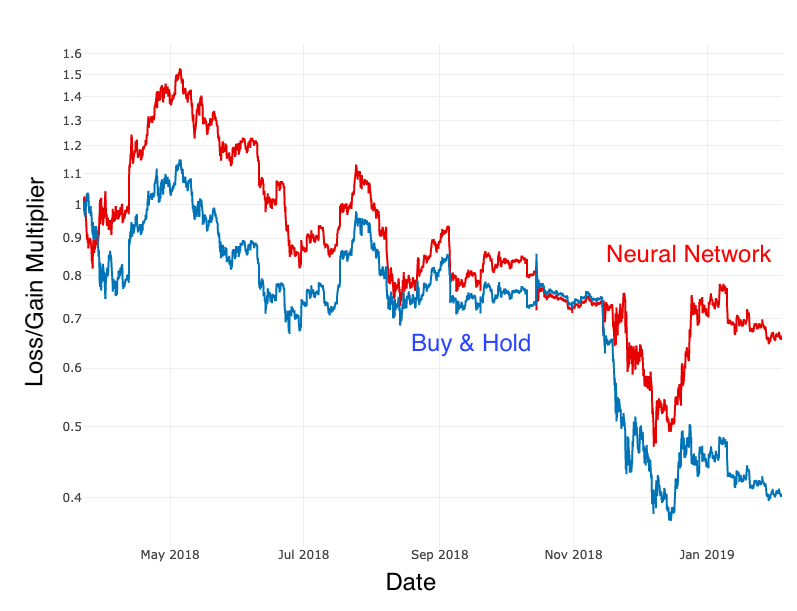

Objective
To obtain a position in data science to
apply my knowledge of machine learning.
Description
I loved fiddling with computers since I was young, and I learned to code
through online resources. I'm particularly interested in machine learning
as I have taken online courses in that area and participated in Kaggle
competitions.
About me
In my spare time, I enjoy cardistry or performing flashly, visually impressive tricks
with cards. I almost always carry around a deck of cards, and I would perform
one-handed cuts as I walk around; it's become my fidget spinner.
Also, I enjoy playing the piano, particularly pop songs like Radioactive. I've learned
how to play through YouTube tutorials and sheet music I find online. Songs like
Radioactive aren't too difficult but still is a song that everyones know and sounds great
when played well.
Machine Learning Experience
- Calculated probabilites densities of future prices from HLOC and volalitity
- Implemented neural network with sliding window approach and LSTM in R with Keras
- NN outperformed buy and hold strategy by 62% on test set
- Test set data from Mar. 2018 to Jan. 2019
- NN: 34% loss
- Buy and hold strategy: 60% loss

- Predicted final placement from player stats and player rankings
- Feature engineered relevant features like total distance walked, kills per minute, average speed, etc
- Implemented XGBoost, logistic regression and neural network in R with MLR and H2O
- Predicted who survived from the Titanic shipwreck
- Implemented logistic regression with MLR
- Identified handwritten digits with 99% accuracy
- Implemented convolutional neural network with Keras
Other Experience
- Annual computer security competition CTF
- Cracked computer science logic problems to find the hidden code
- Ranked 59 out of 463 teams
- Received $100 in Amazon AWS credits in prizes
- Built and designed a website to submit and view senior quotes
- Unofficial version where seniors can put what ever they want in their quotes
- Built with PHP and Bootstrap
Andrew Ng's Machine Learning Course
- Implemented regressions, neural networks, k-means, PCA, and other machine learning algorithms from scratch in MATLAB
Deeplearning.ai's Deep Learning Course
- Implemented neural network, momentum, RMSProp, and ADAM in Python using NumPy
- Learned about applied ML techiques like orthogonalization, single-number evaluation metric, and training on a different data distributions
- Currently on course #4, learning about deep learnining in computer vision